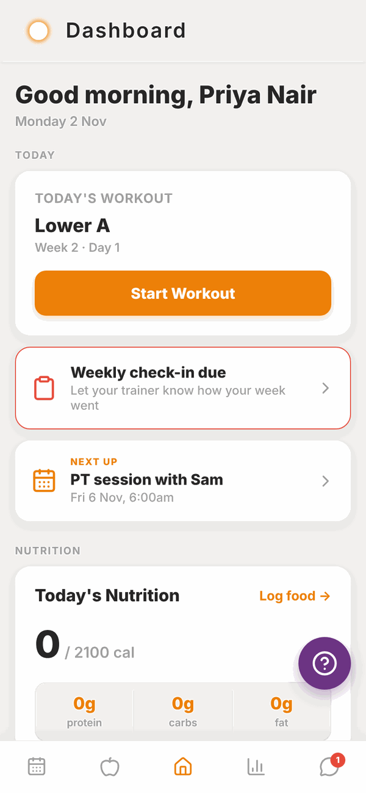
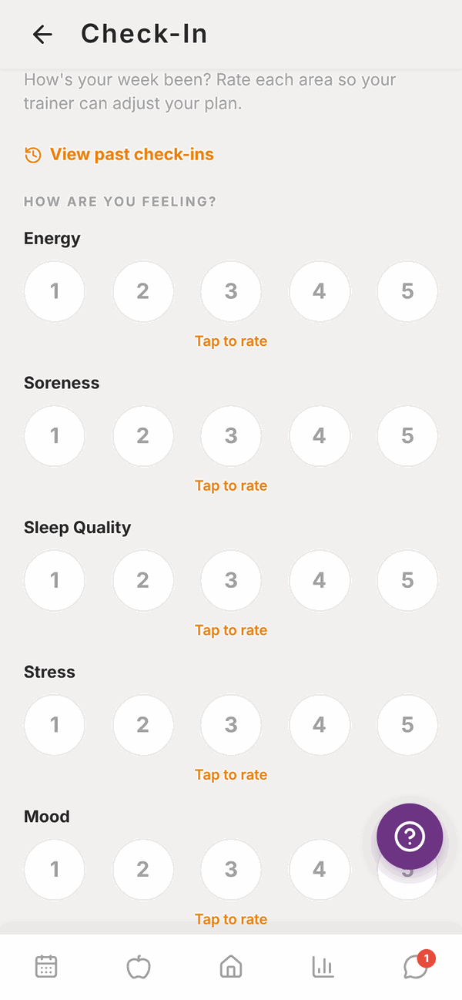
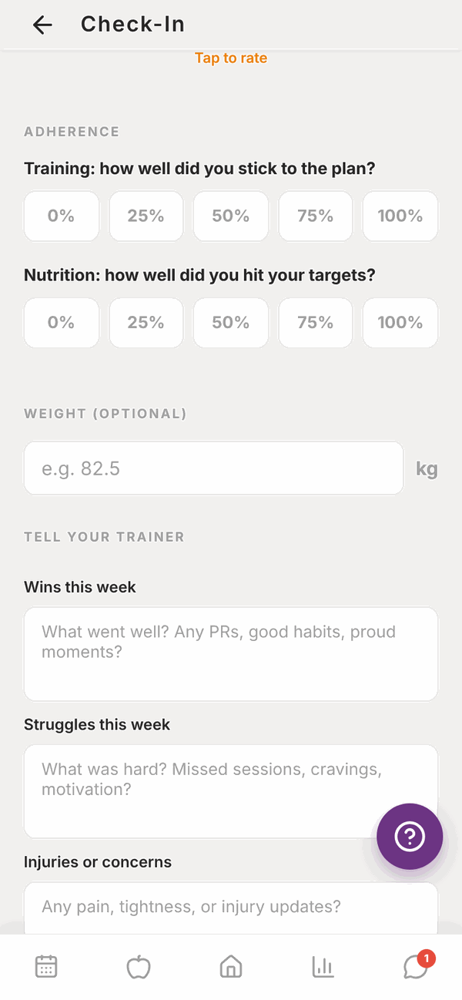
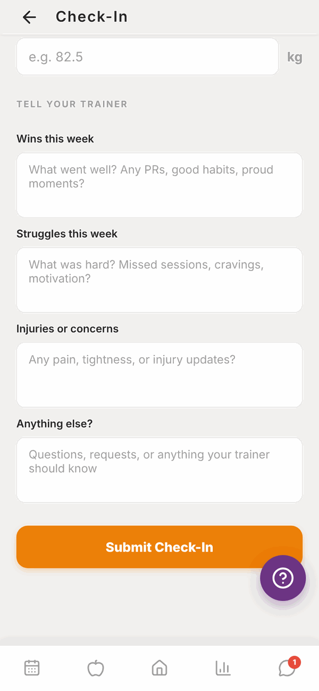
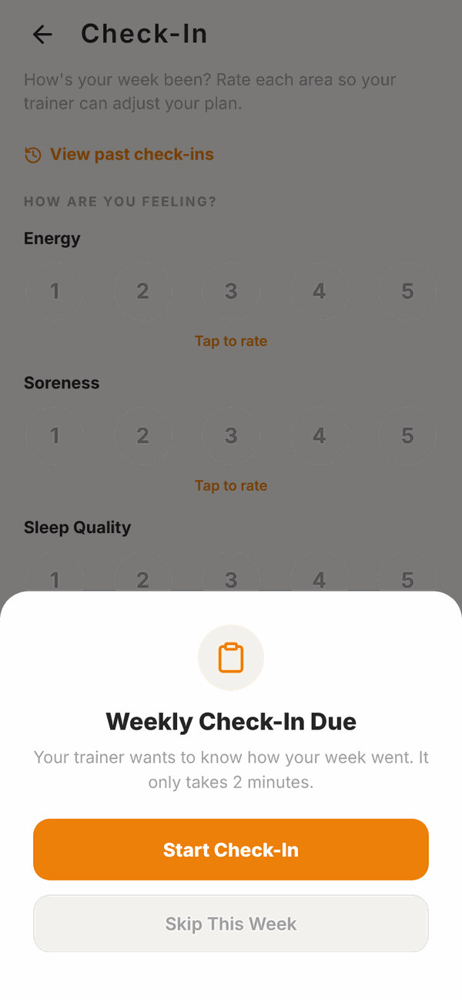
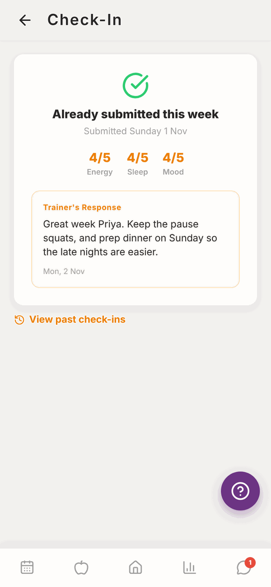
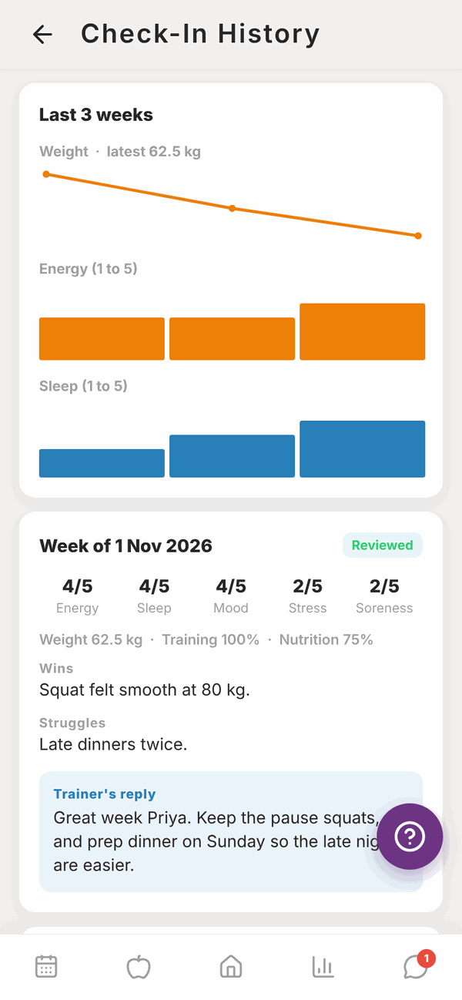
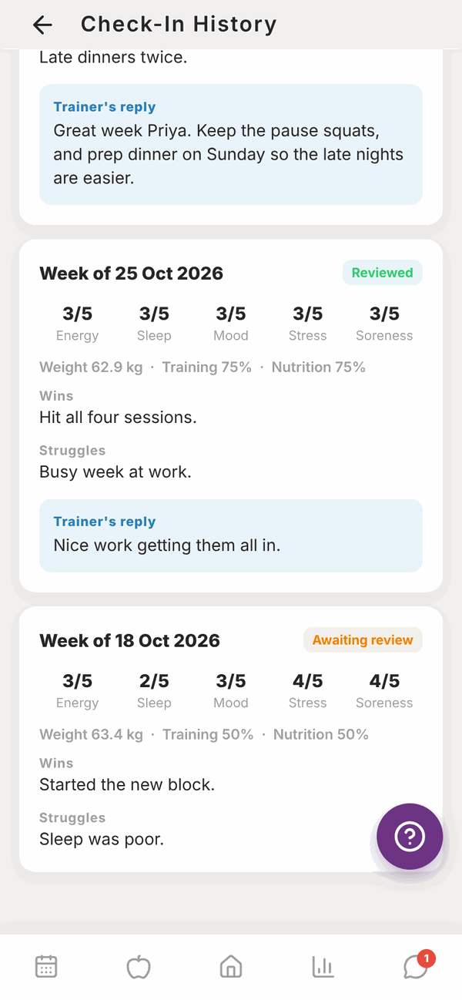

Totality for clients
Weekly check-ins
Tell your trainer how your week went, read their reply, and look back over past check-ins.
A check-in is a short weekly form that tells your trainer how you're going. It takes about two minutes. Your trainer reads it, replies, and uses it to adjust your plan.
Check-ins need a trainer. If you don't have one linked in Totality, the Check-In tile doesn't show on Home.
When it's due#
Your check-in is due on Sunday from 10am, and all day Monday. You can do one check-in per week.
When it's due:
- A red Weekly check-in due card shows on Home.
- The Check-In tile on Home turns red and says Due now.
- If you've allowed reminders, you'll get a push notification and an email. See Settings.

Do your check-in#
- Tap the red Weekly check-in due card on Home, or the Check-In tile.
- If you see Weekly Check-In Due, tap Start Check-In.
- Under HOW ARE YOU FEELING?, tap a number from 1 to 5 for Energy, Soreness, Sleep Quality, Stress and Mood. A word under each number shows what it means, for example 1 is "Exhausted" and 5 is "Amazing" for energy.
- Under ADHERENCE, tap how well you stuck to your training and your nutrition: 0%, 25%, 50%, 75% or 100%.
- Type your weight under WEIGHT (OPTIONAL) if you weighed in.
- Under TELL YOUR TRAINER, write anything you like in Wins this week, Struggles this week, Injuries or concerns and Anything else?. These are all optional.
- Tap Submit Check-In.



You'll see "Check-in submitted. Your trainer will review it and respond." Your trainer gets a notification straight away.
All five ratings must be filled in. If one is missing, you'll see Missing ratings.
Skip a week#
Away, sick, or just not up to it? When the Weekly Check-In Due screen shows, tap Skip This Week. The reminder goes away until next week.

Read your trainer's reply#
Open Check-In again after you've submitted. You'll see Already submitted this week with your scores. Under it:
- ⏳ Waiting for trainer review means your trainer hasn't replied yet.
- Trainer's Response shows their reply once they have.

Past check-ins#
On Home, tap the Check-In History tile, or tap View past check-ins on the check-in screen.


At the top are small graphs of your weight, energy and sleep over recent weeks. Below that is each week's check-in, newest first, with all your scores, what you wrote, and Trainer's reply. Each one is marked Reviewed or Awaiting review.
What about progress photos?#
Progress photos aren't part of the check-in form. Add them any time from the Photos tab in Progress, and your trainer sees them there. See Progress.
Questions#
I can't find the check-in. Where is it?
On Home, scroll to MORE and tap Check-In. If there's no Check-In tile, you don't have a trainer linked in Totality yet.
Can I check in on a Wednesday?
Yes. Open the Check-In tile any day. The reminder only shows on Sunday and Monday, but you can submit any time if you haven't done this week's yet.
Can I change a check-in after I've sent it?
No. Message your trainer with anything you forgot.
It says "No trainer".
You need to be linked to a trainer before you can submit check-ins. Ask your trainer or gym to link you.
Does the weight I type go anywhere else?
Yes. It's also added to your Weight Log in Progress, so you don't need to log it twice.
I skipped by accident.
Message your trainer with how your week went. The skip covers that week, and you can check in normally next week.
I don't get check-in reminders.
Check Check-in reminders is on in Settings. Push reminders only work in the phone app.